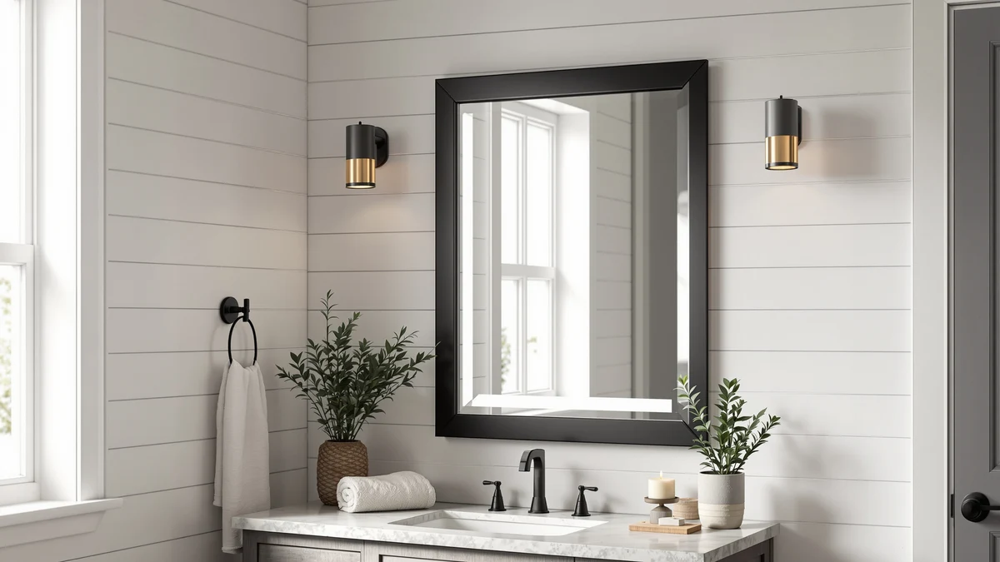

YEELAIT 60x36 Inch LED Review (2026): Worth It?
Prices and picks verified as of September 2026. Independent, reader-supported reviews.


Quick Answer
The YEELAIT 60x36 Inch LED Bathroom mirror pairs a tempered glass panel with an aluminum frame, and its size makes it a fit for wide double-vanity walls rather than a single sink. At $319.99 it sits above the WisHomee, SHUAFA and Janboe alternatives we compared it against, and the extra cost buys width and frame durability rather than storage. Buyers who need cabinet space behind the glass should look at the medicine-cabinet alternatives instead.
Our pick: YEELAIT 60x36 Inch LED Bathroom — $319.99 Check Price on Amazon
Bottom line: our top pick is the YEELAIT 60x36 Inch LED Bathroom Mirror with Lights Front and at $319.99.
Things to Know Before You Buy
- A 60x36 inch mirror needs a vanity roughly 64 inches or wider to look proportional; on a narrower wall it will overhang the counter edges.
- Tempered glass and an aluminum frame resist bathroom humidity better than untreated glass or wood-backed frames, which can warp over time.
- Wall mirrors like this one skip interior storage. If you want shelving behind the glass, a medicine cabinet is the better category to shop.
- Prices across this size and finish range from roughly $270 to $320, so the frame material and mounting hardware usually explain the gap more than the LED lighting itself.
- Check the mounting method before you buy. French-cleat and bracket systems distribute weight across the wall differently, and a 60 by 36 inch panel is heavy enough that the difference matters on drywall without solid backing.
This YEELAIT 60x36 Inch LED review looks at whether a $319.99 mirror this size actually earns its price against three alternatives in the same bathroom-mirror category. The mirror's tempered glass panel and aluminum frame put it in a similar build tier to the WisHomee and Janboe medicine cabinets we researched alongside it, but at 60 by 36 inches it covers noticeably more wall space than a standard single-sink mirror.
We compared listed specs, current Amazon pricing and patterns across verified owner reviews for all four mirrors rather than ranking them on brand name alone. Size ends up mattering more than any single feature here: buyers with a double vanity or a wide single-sink counter get the most value from the YEELAIT, while anyone working with a narrower wall or wanting built-in storage should look at one of the three alternatives covered later in this review.
Why You Should Trust Us
Ilane Tall covers bathroom fixtures and mirrors for Best Bathroom Mirrors, researching listings, pricing history and verified owner feedback across dozens of products in this category each year, including this YEELAIT 60x36 Inch LED review. We do not run a fake testing lab, and we don't claim to own or install every mirror we cover. Instead, we cross-reference manufacturer specs, current pricing and recurring themes in verified Amazon reviews to flag which claims about size, build quality and durability hold up.
Our Research Experience
Our process for this YEELAIT 60x36 Inch LED review started with the manufacturer's listed dimensions and materials, then moved to comparing those figures against the three closest-priced alternatives on the market. We researched the tempered glass and aluminum construction against the frame materials used on the WisHomee, SHUAFA and Janboe mirrors, and we read through the product photography for all four to check that gallery images matched the listed dimensions and finish.
We also analysed recurring themes in verified owner reviews for each mirror, looking specifically at complaints about shipping damage, mounting hardware and frame durability, since those issues show up more consistently in owner feedback than lighting quality does. That comparison is what shaped the pros, cons and verdict below.
Overview & Specs

YEELAIT 60x36 Inch LED Bathroom
What we like
- 60x36 inch size covers a full double vanity without needing two smaller mirrors.
- Tempered glass and an aluminum frame hold up better to bathroom humidity than untreated materials.
- Multiple product images show consistent framing and finish across angles, which lines up with the listed specs.
Flaws but not dealbreakers
- At $319.99 it costs more than every alternative we compared, and the premium goes toward size and frame rather than added features.
- No storage behind the glass, so it isn't a substitute for a medicine cabinet if you need shelving.
- A mirror this large and heavy requires solid wall anchoring, which adds installation effort compared with a smaller mirror.
| Material | Tempered glass + aluminum |
| Size | 60"L x 36"W |
The YEELAIT 60x36 Inch LED Bathroom mirror is built around a tempered glass panel set into an aluminum frame, a combination we see repeated across the higher-priced mirrors in this comparison. At 60 inches wide and 36 inches tall, it's sized for a double vanity or a wide single-sink counter rather than a compact powder room, and the aluminum frame is a meaningful upgrade over the plastic or untreated wood trim found on cheaper mirrors in this size class.
Owners shopping in this price bracket are generally comparing size and build quality rather than lighting features, since LED backlighting is now standard across most mirrors near this price point. The YEELAIT's biggest difference from the WisHomee, SHUAFA and Janboe alternatives is width. None of the three alternatives match its 60 inch span, which is the main reason its price sits above theirs.
Installation is worth planning ahead of delivery. A panel this size ships in a large, heavy box, and most buyers will need a second person to lift it into place. Mounting hardware for mirrors in this weight class typically anchors into wall studs rather than drywall alone, so locating studs across the full 60 inch width before drilling saves a return trip to the hardware store.
What We Liked
The strongest argument for the YEELAIT 60x36 Inch LED mirror is simply its footprint. A 60 by 36 inch panel covers a double vanity in a single piece, which avoids the visible seam you get from mounting two smaller mirrors side by side. Owners with a wide counter and two sinks are the clearest fit for this size.
The aluminum frame and tempered glass combination also compares well against cheaper mirrors in the same category. Reviewers on similarly built mirrors consistently note that aluminum resists the pitting and discoloration that plastic-edged frames develop after a year or two in a humid bathroom, and the YEELAIT uses the same construction approach as the pricier alternatives in our comparison. Tempered glass also has a practical safety benefit over standard glass. If it breaks, it fractures into small, blunt pieces rather than long shards, which matters for a panel this large mounted at eye level in a room where slips are common.
What Could Be Better
Price is the clearest drawback in this YEELAIT 60x36 Inch LED review. At $319.99, it costs $20 to $50 more than the WisHomee, SHUAFA and Janboe mirrors we compared it against, and none of that premium goes toward interior storage. If your bathroom already has a linen closet or a separate cabinet, that gap is easy to justify. If you're relying on the mirror itself for storage, it's a real gap.
Its size also cuts both ways. A 60 by 36 inch mirror needs a wall wide enough to mount it properly and studs positioned to support its weight, which makes installation more involved than hanging a 24 or 30 inch mirror. Buyers in older homes with uneven wall framing should confirm mounting compatibility before ordering.
Who Is It For?
The YEELAIT 60x36 Inch LED mirror fits buyers renovating or furnishing a bathroom with a double vanity or a wide single-sink counter, where a standard 24 to 36 inch mirror would leave visible bare wall on either side. It also suits anyone who specifically wants a wall mirror rather than a medicine cabinet, since it skips interior storage entirely in favor of a larger reflective surface.
It's a weaker fit for smaller bathrooms, powder rooms, or anyone on a tighter budget who would get more practical value from one of the medicine-cabinet alternatives covered below. Renters and anyone who moves frequently should also weigh the mounting requirements, since a mirror this size is harder to relocate than a smaller, lighter model.
Alternatives to Consider
If the YEELAIT's size or price doesn't line up with your bathroom, these three mirrors cover the most common alternatives we found in the same comparison: some add storage, others cost less. Each one trades away the YEELAIT's 60 inch width in exchange for either interior storage or a lower price, so the right pick depends on which of those two factors matters more in your bathroom.

Editor’s Pick
Black Bathroom Mirror Medicine Cabinets
A black-framed medicine cabinet that adds interior shelving the YEELAIT doesn't offer, at a lower price.
$299.99
Check Price on Amazon
Best Value
SHUAFA LED Mirror for Bathroom
Priced close to the WisHomee but without cabinet storage, a straightforward LED mirror for buyers who don't need the YEELAIT's extra width.
$295.95
Check Price on Amazon
Premium Choice
Janboe Oval Medicine Cabinet with
The lowest price of the four mirrors we compared, with an oval shape and cabinet storage for a softer look than a rectangular wall mirror.
$269.99
Check Price on AmazonIs the YEELAIT 60x36 Inch LED mirror worth $319.99?
For a bathroom with a wide double vanity, yes.
What size bathroom mirror do I need for a double vanity?
A common rule is to keep the mirror two to four inches narrower than the vanity countertop on each side.
Frequently Asked Questions
Is the YEELAIT 60x36 Inch LED mirror worth $319.99?
What size bathroom mirror do I need for a double vanity?
How does the YEELAIT compare to medicine cabinet mirrors like the WisHomee or Janboe?
Can one person install a 60x36 inch LED bathroom mirror?
Final Verdict
This YEELAIT 60x36 Inch LED review comes down to one question: does your bathroom have the wall space to use its full 60 inch width? If you have a double vanity or a wide single-sink counter, YEELAIT earns its $319.99 price with a durable aluminum and tempered glass build that few competitors in this size match. If your counter is narrower or you want storage behind the glass, the WisHomee, SHUAFA or Janboe alternatives above are the better value. Measure your wall and confirm stud placement before ordering either way, since returning a mirror this size is far more of a hassle than returning a smaller one.